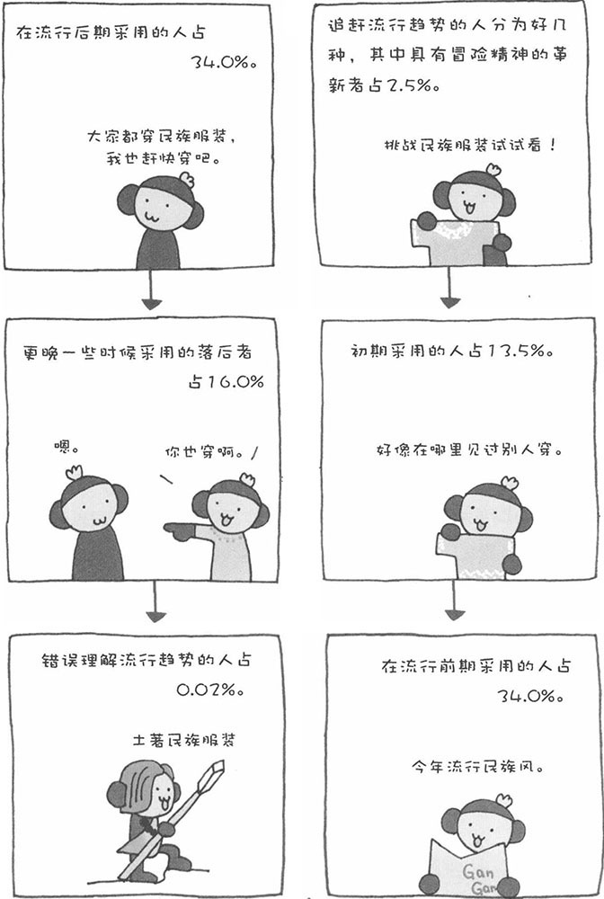

所谓"赶时髦"，就是追赶流行趋势，可是人为什么要"赶时髦"呢？"流行"的语源是"事物像河水流淌一样在世间流过"。河流有时在狭窄的岩石之间形成湍急的激流，有时又在宽阔的河面静静流淌。现在我们所说的流行，是指服装、行为等在世间兴起一时。
历史上的流行，都是从贵族向平民流行的。比如，在古代，贵重的天然染料紫色，只有王族和贵族才有权使用，而当合成染料技术普及，紫色很容易调配出来的时候，紫色就迅速在平民中间流行开来。现在，已经不存在从贵族向平民流行的趋势了，现在的流行体系也发生了很大的变化。
罗杰斯将追赶流行趋势的人分为几类。喜欢挑战新事物、具有冒险精神的革新者占2.5％；采用革新者的设计、发出流行信息的初期采用者占13.5％；在较早的阶段把握住流行趋势的前期多数者占34.0％；在流行趋势已经比较普及的阶段加入的后期多数者占34.0％；最后，因为没有办法而抓住流行尾巴的那部分落后者占16.0％。不过，根据流行对象的不同，几类人的比例也不尽相同，所以以上数字只作为参考。
革新者中又分为两种，一种人并没有意识到自己的创新行为或服饰能引起新的流行趋势，而另一种人则是有意识地在创造新的流行趋势。初期采用者中的大多数人具有"赶时髦"的意识，他们较早地采用与众不同的行为或服饰，从而引领新的流行趋势，对此他们会产生精神上的优越感，并满足自我展示的欲望。前期多数者紧跟流行趋势属于一种同调行为，不过他们也会像初期采用者那样有一种优越感。然而，后期采用者追赶流行趋势则纯属同调行为，其中有不少人具有接近强迫观念的意识。落后者则基本上属于传统指向者。以上就是追赶流行趋势的几种人，看看您自己属于哪一种。这是不是很有意思呢？
